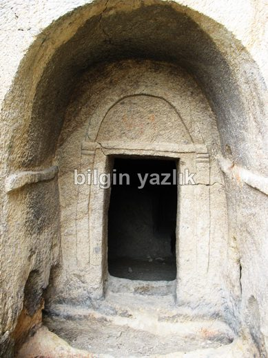
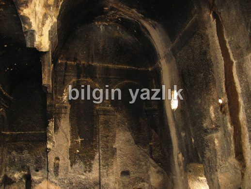
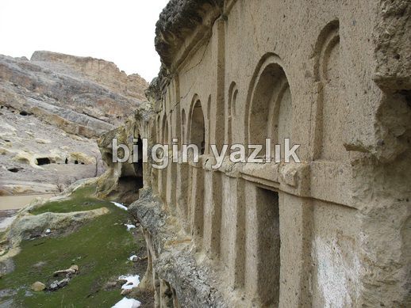
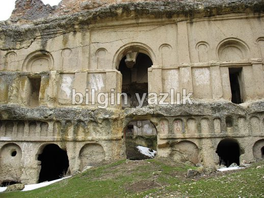
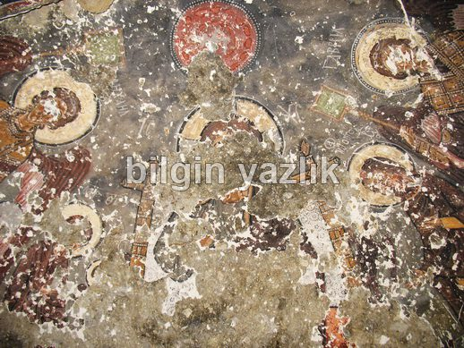
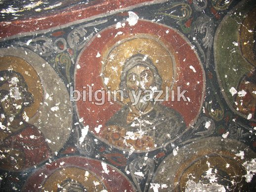
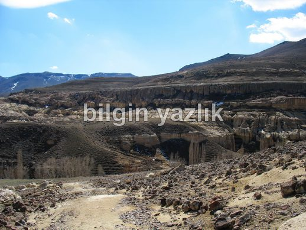
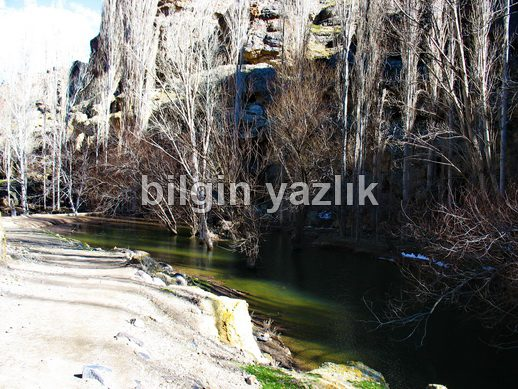
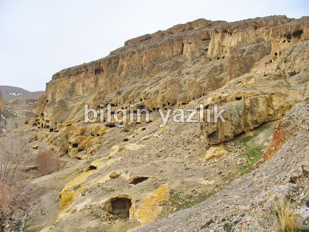
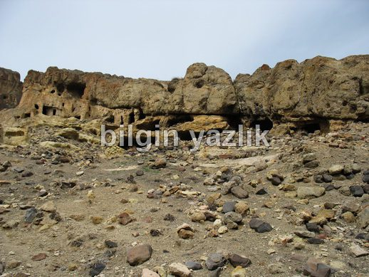

Erdemli Kaya Kiliseleri
Kayseri – Yeşilhisar karayolu üzerinden ulaşılan bölge, adını yanı başındaki Erdemli köyünden almaktadır. Derin ve uzun bir vadinin Doğu girişine kurulmuş olan manastır olarak da tanımlanabilir. Bölge girişinde güney yamaçta yer alan büyük sütunlu kilise, özellikle görülmeye değer. Vadi içerisinden köyde doğan bir su akmaktadır ve köylüler tarafından kullanılmaktadır. Vadi içerisinde suyun sulamada kullanılmak üzere depolandığı bir havuz da yer almaktadır. Vadinin derin olması yükseklere şapel yapılmasına olanak tanımıştır ve çok sayıda şapel mağara bölgeye inşa edilmiştir. Bugün hala bir kısmında freskolar görülebilir.
Vadi, Yeşilhisar ilçesi sınırları içerisinde yer almaktadır ve Kapadokya benzeri karakteristik kaya yapısına sahiptir. Soğanlı’nın hemen yanı başında yer alan bu kiliseler dönemin önemli yapıları arasında yer almaktadır.
Erdemli Kaya kiliselerinin nerede olduğunu öğrenmek için Google Haritalarına bakabilirsiniz.










Bu yazı taliyol arşivinden taşınmıştır. · özgün kayıt